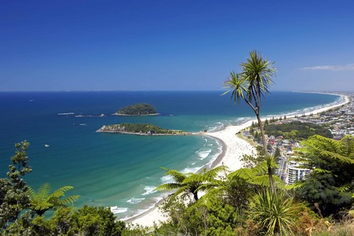
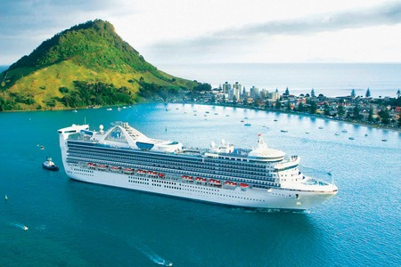
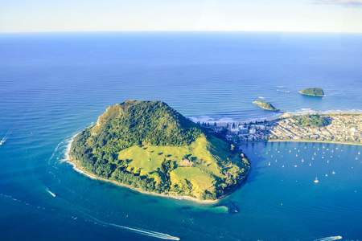
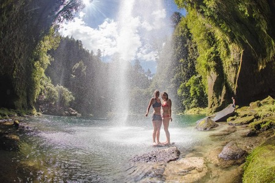
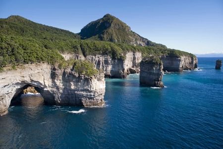
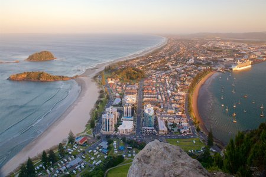
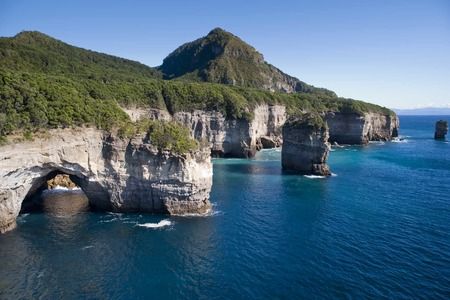
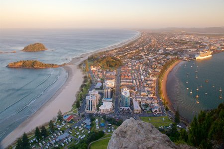

Bay of Plenty
La región de Bay of Plenty cuenta con espectaculares playas, jugosos kiwis
y maravillas geotermales.
Cuando James Cook llegó en 1769, atracó en una bahía "llena de
plantaciones y aldeas", que era, a su juicio, una "bahía de abundancia"
(en inglés, bay of plenty).
Hoy, la región de Bay of Plenty en Nueva Zelanda sigue siendo un lugar de
abundancia. En los alrededores de Tauranga hay hectáreas de huertas y
jardines en los que se cultiva de todo, desde kiwis y cítricos hasta paltas. Si a esto le agregás las cervezas artesanales y la gran cantidad de pescados y mariscos frescos, sabrás que este es un lugar en el que podrás
disfrutar de la buena comida.
Mount Maunganui, a una corta distancia de Tauranga, te ofrece playas
espectaculares que atraen a los surfistas durante todo el año, y que fue
votada la mejor de Nueva Zelanda por TripAdvisor. Para los más aventureros,
hay paracaidismo y, si preferís quedarte en tierra firme, velerismo en tierra
(pequeños veleros con ruedas).




 


